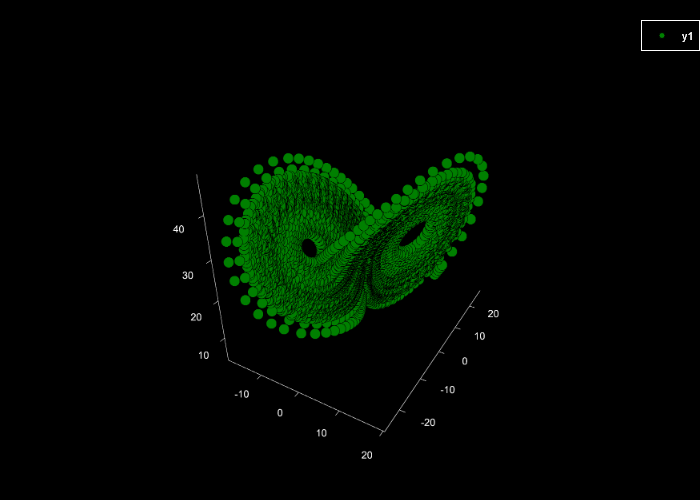

Example 2: (Fine-grained) Permutation Entropy
Import the x, y, and z components of the Lorenz system of equations.
Data = ExampleData("lorenz");
using Plots
scatter(Data[:,1], Data[:,2], Data[:,3],
markercolor = "green", markerstrokecolor = "black",
markersize = 3, background_color = "black", grid = false)
Calculate fine-grained permutation entropy of the z component in dits (logarithm base 10) with an embedding dimension of 3, time delay of 2, an alpha parameter of 1.234. Return Pnorm normalised w.r.t the number of all possible permutations (m!) and the condition permutation entropy (cPE) estimate.
Z = Data[:,3];
Perm, Pnorm, cPE = PermEn(Z, m = 3, tau = 2, Typex = "finegrain",
tpx = 1.234, Logx = 10, Norm = false)([-0.0, 0.8686539340402203, 0.946782979031713], [NaN, 0.8686539340402203, 0.4733914895158565], [0.8686539340402203, 0.07812904499149276])